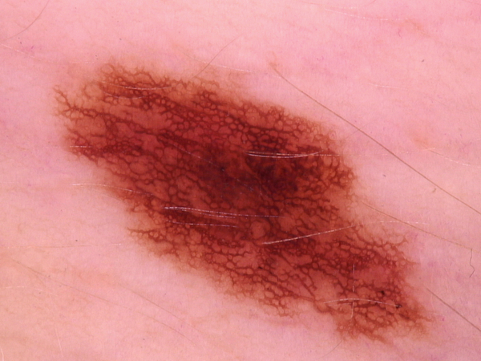

Description
This demo uses a fine-tuned version of MobileNet in order to classify skin images into 7 different categories:
basal cell carcinoma
Actinic keratoses and intraepithelial carcinoma
vascular lesions
benign keratosis-like
dermatofibroma
Model Location (json description)
Status
Model Output
